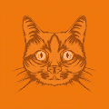
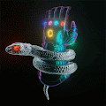
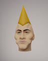
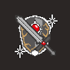

An Appealing Collection of Horrific Things 一个被遗忘的梦想的空间，在焦虑的心灵深处。 一个吸引人的可怕事物集合NFT - 常见问题（FAQ） ▶ 什么是吸引人的可怕事物集合？ 一个吸引人的可怕事
An Odd Little Place: The Digital Works of Jerry Garcia (1992-1995) Jerry Garcia 家族与 YellowHeart 合作，展示了“一个奇怪的小地方：Jerry Garcia 的数字作品（1992-1995）”NFT 收藏。作为一名跨越所有媒介的艺术家，Garc
Bored Ape x Adidas Collab Snoop Dogg Bored Ape x ADlDAS Collab Snoop Dogg NFT - 常见问题（FAQ） ▶ 什么是 Bored Ape x ADlDAS Collab Snoop Dogg？ Bored Ape x ADlDAS Collab Snoop Dogg 是一个 NFT（非同质）系列。存储在区块链上的数字收藏品系列。
Cat Town Punks 欢迎来到猫镇朋克！喵！ 太空中少数将产生自己的硬币的 NFT 之一 - CatCoin 镇上有新的朋克。有 20,000 个唯一生成的 NFT。他们已经准备好接管世界。 尽管我对我的主人
catist-free-drawings 从被人们遗弃和避开的流浪猫身上寻找新的美丽。 通过绘画看到看不见的东西。 cat+artist一个喜欢猫的 NFT 创作者 画你想要的一切！！ Catist 这是一个无
Cats and Watches Society CAWS Cats and Watches Society (CAWS) 是由 DeFi Yield Protocol 开发的 10,000 个 NFT 的集合，DeFi Yield Protocol 是去中心化金融领域最有经验和创新的项目之一。在收养过程中，您的猫将配备一块很酷的豪华手表
 Cats of the MetaSouk MetaSouck 的猫是 1,000 只独特的猫的集合，它们以 NFT 的形式生活在区块链上。 猫作为 ERC721 代币存储在以太坊区块链上。业主可以下载 .png 格式的猫，他们还可以请求它们的高分
CatsOnChain (by PMD) CatsOnChain 是以太坊区块链上第一个 100% 链上生成的 GIF 集合。如果您查看当前的链上 NFT 项目，您会注意到其中大多数使用矢量图像（SVG）。我们还没有找到一个生成链
CatzCrewz NFT MUSIC ▶ 什么是 CatzCrewz NFT 音乐？ CatzCrewz NFT MUSIC 是一个 NFT（不可替代令牌）集合。存储在区块链上的数字艺术品集合。 ▶ 存在多少个 CatzCrewz NFT MUSIC 代币？ 总共有 33 个 CatzCrewz NFT MUSIC NFT。目
CB Official 颜色块是 2,999 个具有无限可能性的交互式块的创世集合。加入我们，成为未来的一部分！ ▶ 什么是 CB Official？ CB Official是一个 NFT (Non-fungible token) 集合。
CB1000 向 Dieter Rams 和他标志性的 T1000 收音机致敬的生成艺术收藏品。每个 CB1000 都基于最初购买“已关闭”的 CB1000 的交易哈希。 CB1000 是一个生成艺术收藏品，向 Dieter Rams 和他标志性的 T1000 收
CC0 x ricky 一切都是混音，照顾病人很重要，客户要跟着他们，但同时他们也会受到一些巨大的痛苦和痛苦的影响。 ▶ 什么是 CC0 x ricky？ CC0 x ricky 是一个 NFT (Non-fungible token) 集合。
Celebrating CC0 为庆祝 XCOPY 的传奇 CC0 公告而创作的限量版艺术品！此系列的 100% 销售收入将用于购买 XCOPY 原件！ ▶ 什么是 Celebrating CC0？ Celebrating CC0 是一个 NFT（Non-fungible t
Celestial Mothers 通过支持、教育和治愈全世界的母亲和养育者来庆祝母亲的神圣角色。 创始人兼艺术家 Méora 由母亲主导的 NFT 项目。 Mothers of Eden 是一个 NFT 合集，包含 7,777 位母亲和
Celestial World: Alpha Pass Angels & Devils Alpha Pass NFT 是您进入我们虚拟世界的专属钥匙。Celestial World 是一个完全身临其境的 MMORPG 游戏体验。 从第 1 季的 4 个职业和 4 个职业中进行选择，探索
Centraland NFT 以太坊区块链上 333 个动画 Gen 1 Centraland 地块的集合。 每个 NFT 将授予持有者代表社区获得的新西兰 IRL 土地的分散所有权。Gen 1 持有者将解锁具有有形价值的独家福利
Century Social Club CSC 是 8,888 个 NFT 的集合。每个 NFT 都可以访问我们应用程序的产权！ CSC不仅仅是一个俱乐部，它是一个成为你命运主人的机会！在一个充满限制和边界的社会中，
Certificate of Inauthenticity 可证明不真实的稀有艺术版 - “气球狗”、“小便池”和“管道”。 忘记担心艺术品盗窃，您可以通过区块链的加密确定性证明这不是真实的东西。 为了明确链
 CGAJewelry CGAJewelry 是通过燃烧 Crypto Gems 制作的独特艺术品的限量收藏。 在以太坊的支持下，这些宝石的艺术表现形式是稀缺的。使用权益证明模型，CGA 以公平和预定义的方式将
 Chad Heads 不为任何人，为所有人。也许什么都没有，很少有人能理解。 Chad 不仅仅是一名自由艺术家，他还是耐克 3D 设计的负责人，不久前他从 1998 年至 2011 年的职业滑板手的
ChainArtefact(Greatsword) 全链人工制品系列。巨剑版。 这把巨剑散发出强大的能量。现在是你掌握这种力量的时候了。现在，选择……用你的直觉！ ▶ 什么是链神器（巨剑）？ ChainArtefact(Greatsword) 是一个
ChainArtefact(MagicWand) 全链人工制品系列。魔杖版。 这魔杖散发出强大的能量。现在是你掌握这种力量的时候了。现在，选择……用你的直觉！ ▶ 什么是链神器（魔杖）？ ChainArtefact(Shield) 是一个 NFT
 ChainArtefact(Shield) 全链人工制品系列。盾版。 这个盾牌散发出强大的能量。现在是你掌握这种力量的时候了。现在，选择……用你的直觉！ ▶ 什么是链神器（盾）？ ChainArtefact(Shield) 是一个 NFT (Non-fungible
ChainArtefact(Sword) 全链人工制品系列。索德版本。 这把剑散发出强大的能量。现在是你掌握这种力量的时候了。现在，选择……用你的直觉！ ▶ 什么是链神器（剑）？ ChainArtefact(Sword) 是一个 NFT
Chroma Sets: 1st Gen 项目网站、社交联系方式、项目介绍内容详见：https://opensea.io/collection/chromasets1stgen Chroma Sets: 1st
CityDAO Citizenship 公民 NFT 持有者是 CityDAO 的公民，授予社区访问权和治理权。 CityDAO 正在探索链上去中心化资产所有权，从怀俄明州的一块土地开始。每块土地都是一个 NFT，可以由 DAO


 是由 DeFi Yield Protocol 开发的 10,000 个 NFT 的集合")